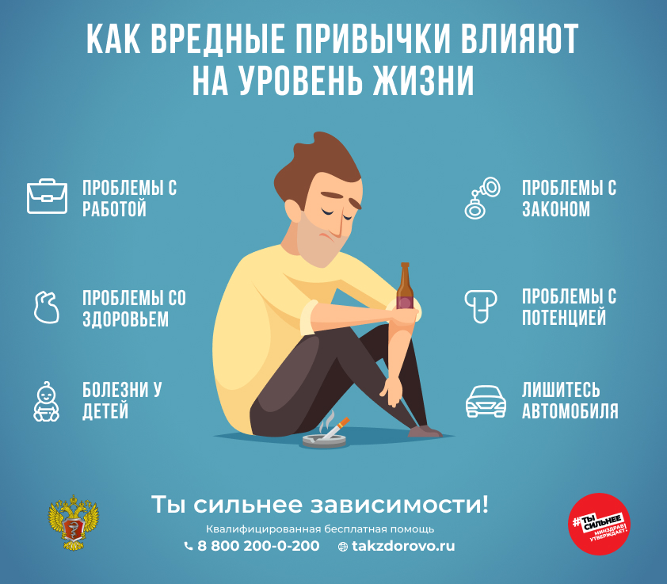
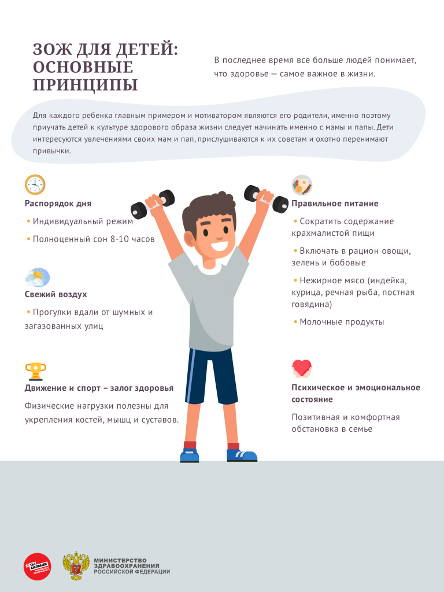
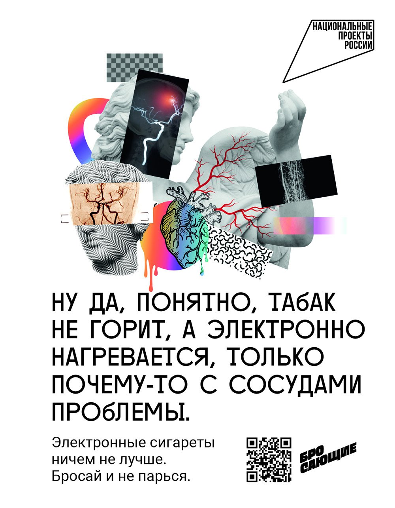
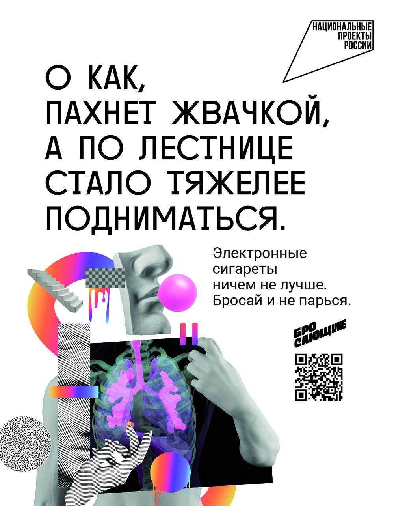

Спорт
Муниципальный этап Всероссийского соревнования "Белая ладья" Конаковского района 2023 год
Здоровье

Как оградить ребенка от алкоголя и наркотиков
Последствия потребления наркотиков и ПАВ

День отказа от курения
Международный день отказа от курения
Традиционно в третий четверг ноября отмечается День отказа от курения.
В настоящее время результатами более 100 тысяч исследований доказано, что курение является основным фактором риска более 30 заболеваний. Никотин – мощный фактор, способствующий развитию сердечных заболеваний, атеросклероза, эмфиземы, стенокардии, тромбоза, хронического бронхита и бронхиальной астмы. Курение может привести к раку губы, языка, гортани, трахеи, легких, желудка, мочевого пузыря. Курильщик собственноручно сокращает свою жизнь на 3-8 лет. Эффект курения на организм человека не зависит от количества выкуренных сигарет; выкуривание даже одной сигареты в день является рискованным для здоровья.
Последние данные указывают на то, что курение снижает эффективность многих лекарственных средств: сердечных, препаратов, улучшающих свертываемость крови, снижающих уровень холестерина крови и многих других.
По данным Всемирной организации здравоохранения, от пагубного воздействия табака на организм человека ежегодно умирает около 6 миллионов жителей планеты, 12% из которых – некурящие, подвергающиеся воздействию вторичного табачного дыма. Доказано, что для людей, хронически находящихся рядом с курящими, риск развития многих заболеваний также выше, чем у тех, кто лишен этого «удовольствия». Это в первую очередь относится к детям (болезни дыхательной системы и ЛОР-органов) и беременным женщинам. Задумайтесь об этом и рассмотрите курение как серьезную угрозу для вашего здоровья и здоровья ваших близких. Это важный первый шаг при отказе от табака.
Следует отметить вред курения кальяна. Доказано, что продукты, входящие в состав заправляемых жидкостей, также опасны, а их тление (в отличие от сгорания при обычном курении) может оказывать даже более выраженное патологическое воздействие.
Во многих странах мира уже приняты законы, защищающие людей от воздействия табачного дыма в общественных местах. В нашей стране действует закон «Об охране здоровья граждан от воздействия окружающего табачного дыма и последствий курения табака». Согласно этому закону запрещено курение в кафе и ресторанах, помещениях, предназначенных для оказания жилищных, гостиничных и бытовых услуг, в поездах дальнего следования, на пассажирских платформах пригородного сообщения.
Как отказаться от табака? Какие меры предлагает современная наука и медицина?
Прежде всего, вы сами должны принять решение об отказе от курения, определив для себя одну наиболее важную причину для этого. Постарайтесь самостоятельно проанализировать свое «курительное» поведение и измените обстановку, которая побуждает вас курить. Избегайте мест, где курят замените акт курения на любое другое действие, которое станет своего рода «переключением» и со временем вам будет приносить удовольствие. Это может быть прогулка, элемент творчества или занятие спортом, общение. Возможно, вы сразу предпримите попытку полностью отказаться от сигарет или будете уменьшать количество сигарет, удлиняя промежутки между ними. Считать выкуренные сигареты – полезно. Чрезвычайно важно, чтобы вас поддерживали близкие; хорошо, если вы предпримите этот важный шаг к оздоровлению с кем-то из близких: шансов на успех будет больше. Все эти действия входят в так называемый «План отказа от табака». Отнеситесь к этому серьезно! Обязательно определите дату полного отказа от табака, которая для вас будет наиболее удобной исходя из вашего распорядка.
В настоящее время в арсенале медицины имеется несколько лекарственных препаратов, которые помогают уменьшить биохимическую зависимость и выраженность синдрома отмены. Результаты исследований с большим количеством участников доказали их эффективность и безопасность. Никотинзаместительная терапия (НЗТ) применяется в виде пластырей, спреев и жевательной резинки. При применении НЗТ вы сразу должны исключить курение из своей жизни. Другие препараты воздействуют особым образом на никотиновые рецепторы, и при их приеме разрешается постепенный отказ от сигарет. Ознакомьтесь с инструкцией по использованию препаратов.
У некоторых курильщиков развивается синдром отмены. Постарайтесь заранее спланировать ряд действий, направленных на его уменьшение. Пейте больше воды, гуляйте или занимайтесь спортом, найдите себе занятие по душе, контролируйте вес. Не отчаивайтесь, если первая попытка оказалась неудачной, и вы снова закурили. Проанализируйте причины срыва и повторите попытку. Лучше если это произойдет в течение 3 месяцев.
Выгода от отказа от курения начнет проявляться в первые месяцы после отказа от табака. У вас начнет улучшаться функция легких и будет снижаться риск развития всех заболеваний, связанных с табаком, который через 5-7 лет станет таким же как у некурящих. Улучшится внешний вид, повысится настроение, появятся оптимизм и бодрость. А главное, улучшается здоровье и повышается продолжительность жизни.
У вас еще есть время, чтобы улучшить прогноз для жизни и повысить качество жизни. Шанс закуривания у ваших детей будет намного меньше, если вы сейчас бросите курить!
Эффективную помощь в отказе от табака вам окажут по телефону Всероссийской бесплатной консультативной телефонной линии 8-800-200-0-200 в рабочие дни с 9.00 до 21.00. Позвоните сегодня!



Здоровое питание для всей семьи: выбираем полезные продукты и составляем меню на каждый день
Все мы рано или поздно задумываемся о своем питании: проблемы с весом, с кожей, со здоровьем в целом заставляют нас открыть свой холодильник и скептически осмотреть его содержимое. Мы задаемся вопросами «что исключить из рациона?» и «как мне начать правильно питаться?», ищем свой путь к здоровому и красивому телу.
Между тем, здоровое и правильное питание – это не строгая изнуряющая диета, не издевательство над организмом и не лишение его радостей, это всего лишь ряд правил, при соблюдении которых можно кардинально изменить себя, обрести новые полезные привычки, красивую фигуру и существенно продлить жизнь.
Наше тело – отражение того, что мы едим
Ни для кого не секрет, что ожирение стало огромной проблемой современных людей – мы меньше двигаемся, потребляем большое количество жирных продуктов, калорийных соусов, сладостей. Всюду бесконечные соблазны, и производители соревнуются, кто предложит очередной супер-продукт, против которого не устоит ни один потребитель. Результат этой гонки можно наблюдать на улицах любого мегаполиса – по статистике, едва ли не каждый второй житель развитых стран имеет избыточный вес. Ожирение, к сожалению, ведет к проблемам не только в эстетике и самооценке, но и к серьезным последствиям для организма: риск многих заболеваний прямо пропорционален количеству лишнего веса. Диабет, проблемы с сердцем, ЖКТ, с репродуктивной функцией – это лишь малая часть возможных заболеваний, возникающих при несоблюдении режима питания.
Основы здорового питания, или как правильно питаться
При составлении меню здорового питания следует помнить о нескольких общих правилах: во-первых, принимать пищу нужно часто и маленькими порциями. Удобнее всего завести себе небольшую тарелку, в которую помещается порция размером с пригоршню. Не нужно бояться голода! Здоровый образ питания предполагает 5-6 приемов пищи за день. Хорошо также приучить себя питаться в одно и то же время – это стабилизирует работу желудка и будет способствовать похудению.
Второе важное правило – помним о калориях. Нет необходимости скрупулезно высчитывать их в течение всей жизни каждый раз после еды, достаточно неделю-другую последить за своим питанием, и привычка автоматически «прикидывать» калорийность пищи появится сама собой. Норма калорий у каждого своя, узнать ее можно, например, воспользовавшись специальным калькулятором, который легко найти в Интернете. К примеру, женщине 30 лет, весом 70 кг при росте 170 см и небольшой физической активности в сутки необходимо около 2000 ккал. Чтобы сбросить вес, нужно употреблять 80% калорий от нормы, то есть в нашем примере около 1600 ккал в день. Дополнительно урезать рацион нет никакого смысла – организм просто затормозит обмен веществ, да и вреда от такой диеты больше, чем пользы.
Правило третье – соблюдаем баланс между «доходами» и «расходами», то есть той энергией, которая тратится организмом на основной обмен, работу, занятия спортом, и калорийностью питания. Еда включает в себя четыре основных составляющих: белки, жиры, углеводы и пищевые волокна – все они необходимы нашему организму. Вопрос только в том, какие именно из них (жиры и углеводы бывают разными), в каких количествах и пропорциях употреблять. Ориентировочные рекомендованные показатели – 60 г жиров, 75 г белков, 250 г углеводов и 30 г волокон.
Четвертое правило – пейте воду. Зачастую мы не хотим есть, просто наш организм принимает нехватку жидкости за голод и заставляет нас съедать то, что на самом деле не нужно. Полтора и более литра чистой питьевой воды помогут избавиться от псевдоголода, сделают более упругой кожу, улучшат общее состояние организма, ускорят процесс обмена веществ.
И пятое правило – выбирайте продукты с умом. Читайте этикетки, состав и калорийность продуктов, исключите из рациона фастфуд, майонезные соусы, продукты с химическими добавками, консервантами, красителями. Вы должны знать, что вы едите, и тогда путь к красоте и здоровью станет быстрым и приятным.
Здоровые продукты питания
Мы попробуем ответить на извечный вопрос «что съесть, чтобы похудеть?». Главное при составлении меню для здорового питания – соблюдение баланса между расходами и потребляемыми продуктами.
Итак, обязательно нужно включить в рацион здорового питания на каждый день: • злаки, в виде каш и мюсли, богатые медленными углеводами, которые обеспечат наш организм энергией; • свежие овощи (капуста, морковь) обеспечивают организм пищевыми волокнами – клетчаткой; • бобовые – богатый источник растительного белка, особенно необходим тем, кто редко или вовсе не употребляет мясо; • орехи, особенно грецкий и миндаль, благотворно влияют на весь организм и являются источником полиненасыщенных жирных кислот омега-6 и омега-3, микроэлементов; • кисломолочные продукты: натуральные йогурты (без добавления сахара), кефир, обезжиренный творог обеспечивают кальцием и улучшают работу ЖКТ; • морская рыба содержит белок и незаменимые жирные кислоты омега-3; • фрукты и ягоды – кладезь витаминов, оздоравливают кожу и защищают организм от заболеваний; • нежирное мясо – куриная грудка, крольчатина, говядина – источник белка.
Из напитков рекомендуется употреблять минеральную воду, цикорий, смузи, зеленый чай и натуральные свежевыжатые соки, лучше овощные.
Полезные продукты не должны иметь в составе консервантов, искусственных красителей, пальмового масла. Соленья лучше ограничивать – можно побаловать себя ими время от времени, но увлекаться не стоит.
Если у вас есть проблема лишнего веса, то от сахара стоит отказаться вовсе, даже если вы сладкоежка и никак не можете без чашечки сладкого кофе по утрам – сахарозаменители решат эту проблему. Не стоит их бояться, качественные заменители на натуральной основе безвредны, практически не содержат калорий и приятны на вкус.
Под строгим запретом!
С полезными продуктами мы определились, давайте посмотрим на список еды, которая несовместима со здоровым образом жизни и правильным питанием: • Сладкие газированные напитки. Они не утоляют жажду, раздражают слизистую желудка, как правило, содержат чудовищное количество сахара – около 20 г в каждом стакане, искусственных красителей и ароматизаторов, консервантов. • Еда, жаренная во фритюре. Картошка фри, чипсы, сухарики и все, что жарится в большом количестве масла, должно быть вычеркнуто из рациона. Канцерогены, отсутствие полезных веществ и жир – не то, что нужно здоровому организму. • Бургеры, хот-доги. Все подобные блюда содержат смесь из белого хлеба, жирных соусов, непонятного происхождения мяса, разжигающих аппетит приправ и большого количества соли. Что мы получаем в результате? Настоящую калорийную «бомбу», которая мгновенно превращается в складки на теле и не несет никакой пищевой ценности. • Майонез и аналогичные соусы. Во-первых, они полностью скрывают натуральный вкус еды под специями и добавками, заставляя съедать больше, во-вторых, почти все майонезные соусы из магазина – почти чистый жир, щедро приправленный консервантами, ароматизаторами, стабилизаторами и другими вредными веществами. • Колбасы, сосиски и мясные полуфабрикаты. В этом пункте вряд ли нужны какие-либо разъяснения – достаточно почитать этикетку продукта. И это только официальные данные! Помните, что под пунктами «свинина, говядина» в составе чаще всего скрываются шкура, хрящи, жир, которые вы бы вряд ли стали есть, не будь они столь умело обработаны и красиво упакованы. • Энергетические напитки. Содержат ударную дозу кофеина в сочетании с сахаром и повышенной кислотностью, плюс консерванты, красители и много других компонентов, которых стоит избегать. • Обеды быстрого приготовления. Лапша, пюре и аналогичные смеси, которые достаточно залить кипятком, вместо питательных веществ содержат большое количество углеводов, соли, специй, усилителей вкуса и других химических добавок. • Мучное и сладкое. Да-да, любимые нами сладости – одни из самых опасных продуктов. Проблема не только в большой калорийности: сочетание мучного, сладкого и жирного умножает вред в несколько раз и мгновенно сказывается на фигуре. • Пакетированные соки. Витамины и другие полезные вещества практически полностью исчезают в процессе обработки. Какая польза может быть от концентрата, разведенного водой и сдобренного изрядным количеством сахара? • Алкоголь. О вреде его для организма сказано уже достаточно, мы лишь в очередной раз отметим, что алкоголь содержит калории, повышает аппетит, мешает усвоению полезных веществ, а при несоблюдении минимальных доз – медленно разрушает организм, ведь этанол является клеточным ядом.
Советы по правильному питанию
Переход на сбалансированное здоровое питание не будет в тягость, если соблюдать простые рекомендации.
Во-первых, не стоит мучить себя голодом. Если почувствовали дискомфорт, съешьте яблоко, немного орехов, сухофруктов или мюсли.
Во-вторых, много пейте и выбирайте полезные напитки. Хорошо способствует похудению цикорий – он подавляет чувство голода за счет большого количество волокон в составе, благотворно влияет на организм. Также полезен зеленый чай, особенно с имбирем.
Разнообразьте рацион! Чем больше разных полезных продуктов вы потребляете, тем больше организм получает различных микроэлементов, витаминов, аминокислот.
Если очень хочется чего-нибудь запретного – съешьте это на завтрак. Конечно, лучше отказаться от вредных продуктов вовсе, но первое время помогает мысль о том, что иногда все-таки можно себя побаловать.
Чем меньше в пище ненатуральных составляющих, тем лучше. Хотите есть полезные продукты – лучше выбирать кусок мяса вместо колбасы, свежие овощи вместо консервированных, мюсли – вместо сдобных булочек.
И помните, здоровое питание – не краткосрочные ограничительные изменения в рационе, а часть здорового образа жизни!
Территориальный отдел Управления Роспотребнадзора по Тверской области в Конаковском районе.
О профилактике гриппа и ОРВИ в Конаковском районе и вопросах вакцинации
Эпидемиологическая обстановка по заболеваемости гриппом и ОРВИ в Конаковском районе остается стабильной. Заболеваемость в целом по району по совокупному населению ниже расчетного эпидемического порога. Случаев гриппа не зарегистрировано.
В районе продолжается прививочная кампания против гриппа.
Вакцинация является основным эффективным методом профилактики гриппа. Прививаться необходимо ежегодно, так как состав вакцин обновляется с учетом циркулирующих штаммов. Применение вакцины позволяет снизить заболеваемость среди населения, в том числе трудоспособного. Вакцина безопасна и имеет высокую эффективность.
В сезон 2020-2021 гг. за счет средств Федерального бюджета планируется привить против гриппа 49 тысяч жителей района, в том числе более 8,5 тыс. детей.
По данным на 01.10.2020 привито более 14 тыс. человек, в том числе более 3 тыс. детей, что составляет около 20% населения Конаковского района.
Основными неспецифическими мерами профилактики респираторных инфекций являются: - Мытье рук после посещения любых общественных мест, транспорта, прикосновений к дверным ручкам, деньгам, оргтехнике общественного пользования на рабочем месте, перед едой и приготовлением пищи. При отсутствии доступа к воде и мылу, для очистки рук используйте дезинфицирующие средства на спиртовой основе или одноразовые салфетки. - Использование одноразовой медицинской маски в людных местах и транспорте. Смену маски на новую необходимо проводить каждые 2-3 часа, повторное использование маски не допускается. - Избегание близких контактов и пребывания в одном помещении с людьми, имеющими видимые признаки респираторного заболевания (кашель, чихание, выделения из носа). - Ограничение приветственных рукопожатий, поцелуев и объятий. - Частое проветривание помещений. - Соблюдение принципов здорового образа жизни.
Ситуация по заболеваемости гриппом и ОРВИ находится на контроле территориального отдела Управления Роспотребнадзора по Тверской области в Конаковском районе.
Территориальный отдел Управления Роспотребнадзора по Тверской области в Конаковском районе.
МИФЫ И ФАКТЫ О ГРИППЕ
1. ГРИППА БЕЗ ВЫСОКОЙ ТЕМПЕРАТУРЫ НЕ БЫВАЕТ!
Отличительным признаком гриппа является температура 38,5 – 39,0°С с первых часов болезни. Если у вас не так, скорее всего это инфекция, вызванная другим вирусом.
2. ПРИ ГРИППЕ НЕ БЫВАЕТ НАСМОРКА.
В первые дни болезни часто закладывает нос, что связано с интоксикацией организма и отеком зараженных тканей, но насморка не бывает. Только на 3-4 день может появиться классический насморк, причина которого не вирус, а бактерии, которые воспользовались временным ослаблением вашего иммунитета.
3. ВО ВРЕМЯ ЧИХАНИЯ И КАШЛЯ ЧАСТИЧКИ СЛЮНЫ С ВИРУСОМ ГРИППА РАЗЛЕТАЮТСЯ СО СКОРОСТЬЮ 16 км/час.
Миф о том, что инфекция распространяется быстрее – 180 км/час, не был научно подтвержден. Результаты работы были опубликованы в журнале PLOS ONE.
4. ВИРУС ГРИППА НЕ БОИТСЯ МОРОЗА.
При температуре около нуля вирус сохраняется до месяца. Именно поэтому пик заболеваемости приходится на оттепели. Зато обычное мыло убивает вирус, так же действуют на вирус гриппа высушивание и температура выше 70 С.
5. ПОЛУЧИВ ЗАРПЛАТУ БУМАЖНЫМИ КУПЮРАМИ ИЛИ СНЯВ ДЕНЬГИ С ПЛАСТИКОВОЙ КАРТЫ, МОЖНО ЗАБОЛЕТЬ ГРИППОМ.
Ученые выяснили, что денежные купюры являются отличным рассадником инфекции. Вирус гриппа сохраняется на них до 2-х недель. Поэтому деньги в некоторых странах печатают на бумаге с антисептическими свойствами. В Японии деньги стирают при 200 градусах в специальной стиральной машине.
6. ЛУЧШЕЕ СРЕДСТВО ОТ ГРИППА ДЛЯ ГРУДНОГО МЛАДЕНЦА – МОЛОКО ЕГО МАМЫ.
Если кормящая женщина заболела гриппом, нельзя отлучать младенца от груди. Антитела из материнского молока передаются ребенку во время кормления. Поэтому малыш не заражается гриппом во время кормления.
7. ТАБЛЕТКИ ОТ ТЕМПЕРАТУРЫ ПОМОГАЮТ ГРИППУ РАСПРОСТРАНЯТЬСЯ ПО ОРГАНИЗМУ.
Ведь нормальная или слегка повышенная температура тела – это рай для вируса. При удовлетворительном самочувствии принимать жаропонижающие средства взрослым рекомендуется только при температуре выше 39 С, детям – 38,5°С.
8. АСПИРИН ПРИ ГРИППЕ МОЖЕТ ПРИВЕСТИ У СМЕРТИ, ОСОБЕННО ДЕТЕЙ.
При сочетании вирусной инфекции и ацетилсалициловой кислоты, входящей в состав аспирина и некоторых других препаратов, может развиться тяжелое состояние – синдром Рея.
9. ЛУЧШИЙ ИНКУБАТОР ДЛЯ «БАКТЕРИОЛОГИЧЕСКОГО ОРУЖИЯ» – ДОМАШНЯЯ СВИНЬЯ.
Это животное болеет как свиным, так и птичьим гриппом, а также всеми видами «человеческого» гриппа. Несколько разных вирусов, попав в такой «инкубатор», могут обменяться признаками, мутировать. В итоге, птичий грипп может стать заразным при передаче от человека к человеку.
10. ЭПИДЕМИЮ ГРИППА «ПРОГНОЗИРУЕТ» ИНТЕРНЕТ.
В последние годы интернет так прочно вошел в повседневную жизнь, что ученые-биологи стали предсказывать грядущую эпидемию гриппа и скорость её распространения в мире по количеству запросов по поводу гриппа от пользователей всемирной сети.
11. ЛЕЧИТЬ ГРИПП БЕССМЫСЛЕННО: БОЛЕЗНЬ НЕ ОПАСНА И ПРОЙДЕТ САМА СОБОЙ.
Грипп очень опасен. Заболевание гриппом может закончиться летальным исходом, особенно у маленьких детей и пожилых людей. Кроме того, болезнь может оставлять после себя различные осложнения. Чаще всего грипп действует губительно на сердечно-сосудистую систему, сокращая на несколько лет продолжительность жизни. Ироничное высказывание «без лечения грипп длится неделю, а с лечением семь дней» содержит долю правды. Но только не в том случае, если лечение начато вовремя. Своевременность лечения не только сократит сроки болезни, но и уменьшит вероятность развития осложнений.
12. МОЖНО ЛИ ЛЕЧИТЬ ГРИПП АНТИБИОТИКАМИ?
Антибиотики действуют только на бактерии. Вирусы ничего общего с бактериями не имеют, следовательно лечить антибиотиками вирусные заболевания, в том числе, грипп, бесполезно. Иногда на фоне ослабленного иммунитета к вирусной инфекции может присоединиться вторичная бактериальная инфекция. И только в такой ситуации врач (и только врач!) может назначить курс антибиотиков.
13. ЧТОБЫ НЕ ЗАБОЛЕТЬ ГРИППОМ, ДОСТАТОЧНО ПРИНИМАТЬ ВИТАМИНЫ И ЕСТЬ БОЛЬШЕ ЛУКА, ЧЕСНОКА, КВАШЕНОЙ КАПУСТЫ И ЛИМОНОВ.
Витаминная профилактика носит общеукрепляющий характер и непосредственно на вирус не действует. Оптимальным решением станет комплексная профилактика, которая предусматривает закаливание, иммуностимулирующие препараты, вакцинацию и , конечно, витамины.
14. ПРИВИВКА ОТ ГРИППА НЕ ДАЕТ СТОПРОЦЕНТНУЮ ГАРАНТИЮ.
Риск заражения гриппом после прививки остается, но существенно снижается. В среднем прививка обеспечивает защиту на 80-90%.
15. МОЖЕТ ЛИ ПРИВИВКА ОТ ГРИППА ВЫЗВАТЬ ЗАБОЛЕВАНИЕ?
Ни одна вакцина не вызывает типичного заболевания. В процессе вакцинации в организм вводят или ослабленный вирус или его части. Вирус, содержащийся в вакцине, не может вызвать заболевание, но может стимулировать организм к выработке антител. Поэтому, когда в организм попадает «дикий» вирус, то не нужно время для выработки антител – они уже есть после вакцинации .Антитела связываются с вирусом и таким образом предотвращают инфицирование клетки и размножение вируса. Благодаря этому заболевание предупреждается еще до его начала. Современные вакцины переносятся легко, и после прививки нет никаких симптомов заболевания. Лишь у некоторых людей может появиться покраснение в месте введения вакцины или незначительно подняться температура. Это, пожалуй, самые неприятные последствия от введения вакцины.
16. ВИРУСЫ ГРИППА ПОСТОЯННО МУТИРУЮТ. ЗНАЧИТ НЕВОЗМОЖНО ПРЕДУГАДАТЬ, КАКОЙ ИЗ НИХ БУДЕТ В «МОДЕ» И СОЗДАТЬ ВАКЦИНУ, ЗАЩИЩАЮЩУЮ ИМЕННО ОТ НЕГО?
Всемирная Организация Здравоохранения постоянно исследует перемещение вирусов по всему миру и на основании этих исследований дает предложения разработчикам вакцин. Даже если прогноз не оправдался на 100%, вакцина все равно действует, так как большинство вирусов гриппа имеют общие антитела.
17. ПОСЛЕ НАЧАЛА ЭПИДЕМИИ ВАКЦИНАЦИЮ ПРОВОДИТЬ ПОЗДНО?
Оптимальным временем для проведения вакцинации против гриппа является осенний период – с сентября по ноябрь. Лучше всего прививаться за 2-3 недели до начала предполагаемой эпидемии. Если по каким-либо причинам вакцинация не была проведена вовремя, то ее можно сделать и после начала эпидемии, причем использовать можно только вакцины с неживыми вирусами. Однако, если прививка была сделана тогда, когда человек уже был инфицирован вирусом гриппа, но клинические проявления еще не начались, то вакцинация может оказаться неэффективной.
Система оценки качества подготовки обучающихся
Приказ об утверждении плана мероприятий по повышению качества образования в Конаковском районе
План мероприятий повышения качества Конаковский район
Протокол №62 Совещания руководителей общеобразовательных учреждений Конаковского района
Информационная справка по итогам мониторинга введения ФГОС СОО
Аналитическая справка по итогам ВПР 2023
Положение и приказ о механизме объективности
Приказ УО о проведении перепроверок ВПР
Приказ УО о формировании графиков оценочных процедур
Рекомендации по обеспечению объективности ВПР
Письмо УО по оснащению образовательного процесса
Статистико-аналитический отчет по анкетированию 2023 года
Необъективные результаты ВПР
Письмо о планируемых и принятых мерах по работе со школами с необъективными результатами ВПР
Система оценки качества подготовки обучающихся
Материалы методического семинара 23.11.2022 г. ( для руководителей и педагогов ШНОР)
Система выявления, поддержки и развития способностей и талантов у детей и молодежи
Приказ от 27.04.2023 №1126 "О проведении муниципальной метапредметной олимпиады"
Рекомендации по охвату детей программами дополнительного образования
Мониторинг охвата программами дополнительного образования октябрь 2023
Справка за 2022-2023 "Воспитательная работа доп. образование"
Приказ об итогах муниципальных предметных олимпиад
Приказ о проведении муниципального конкурса чтецов" Своих не бросаем"
Приказ о проведении муниципальных соревнований "Будь готов к чрезвычайным ситуациям"
Система работы по самоопределению и профессиональной ориентации обучающихся
Статья по самоопределению проф.ориентации
Мониторинг самоопределения проф.ориен.февраль 2023
Учащиеся из п.Редкино заняли второе место во Всероссийском конкурсе
Справка об организации профориентационной работы в 2022-2023 учебном году
Справка за 2022-2023 год "Воспитательная работа доп. образование"
Система мониторинга эффективности руководителей образовательных организаций
Методика проведения мониторинга эффективности руководителей
Запрос в ОУ по мониторингу обеспеченности кадрами
Приказ УО о формировании кадрового резерва руководящих работников ОУ Конаковского района
Соглашение с ГБПОУ «Калязинский педагогический колледж»
Целевые показатели результативности программы по ликвидации кадрового дефицита
Система мониторинга эффективности руководителей образовательных организаций
Положение о Совете молодых педагогов Конаковского района
Программа мониторинга системы проф.развития педагогов
Анализ методической работы 2022 - 2023
Положение о муниципальном фестивале
Порядок мониторинга реализации программ наставничества в ОО
Приказ УО о продлении фестиваля педагогического мастерства
Исследование профкомпетенций педагогов
Конкурсы профмастерства
Приказ о проведении муниципального этапа Воспитатель года
Муниципальная модель обеспечения профессионального развития и система непрерывного повышения профессионального мастерства педагогических и руководящих работников Конаковского района
Приказ №25 от 23.01.2023г. «Об утверждении руководителей РМО в ДОУ»
Приказ №25 от 23.01.2023г. «Об утверждении руководителей РМО в ДОУ»
Приказ №260 от 13.10.2022 г. «Об утверждении руководителей РМО»
Соглашение о сотрудничестве с ФГБОУ ВО МГУТУ им К.Г.Разумовского
Организация муниципального этапа Всероссийского конкурса «Учитель года России 2023»
Приказ о создании РМО "Точка роста"
Потребность в целевых договорах по направлению подготовки спо
Приказ о проверке сайтов образовательных учреждений
Курсы повышения квалификации «Сферум»
Программа по преодолению кадрового дефицита
Соглашение с педагогическим колледжем
Целевые показатели результативности программы по ликвидации кадрового дефицита
Положение о муниципальном фестивале
Повышение качества ОП ДО
2023-01-Руководителям по ФОП ДО
Письмо УО от 11.05.2023 о внутреннем аудите программ
2023-06-Реализация проекта Читаем вместе
Выписка из протокола №3 расширенного совещания заведующих ДОУ от 15.03.2023
Профессиональное развитие педагогов
2023-02-Анализ показателей 85-К за 2020-22гг
Приказ УО от 10.03.2023 №76 Об итогах городского конкурса чтецов
Повышение качества образовательных услуг
Письмо Управления образования администрации Конаковского района
Отчет о несчастных случаях в ОУ за 2022 год
Совещание 17.05.2023. Результаты мониторинга заболеваемости за 2022 год
Справка Укрепление МТБ ДОУ за 2020-2023гг
Электронные ресурсы ДОО Конаковского района на 01.01.2023 (по статотчетам 85-К)
Приказ УО от 11.09.2023 №228 Об итогах районного конкурса "Лучший участок детского сада"
Приказ УО от 28.04.2023 №130 О проведении мониторинга, итоги мониторинга
Повышение качества ДО для ОВЗ
2021-2022уч.г.- Мониторинг деятельности ППК
2021-2022уч.г.-Мониторинг лог.помощи
2022-11-Получение детьми-инвалидами, ОВЗ дошкольного образования
Выписка из протокола №3 расширенного совещания руководителей ДОО от 15.03.2023
Приказ УО от 20.062023 №177 Об организации работы ПМПК Конаковского района в 3кв.2023г.
Развитие механизмов управления качеством ДО
2019-2024- Проект Поддержка семей, имеющих детей
Сводная таблица результатов по удовлетворенности качеством образовательных услуг
2023-02-Приказ о повышении образования в Конаковском районе
Приказ УО от 07.04.2023 Об итогах районного фестиваля Солнышко в ладошках
2023-Итоги мониторинга удовлетворенности в сравнении с региональными показателями
Отчёт по выполнению показателя предоставляемых КЦ ДОО консультационных услуг в 1,2кв.2023г.
Письмо УО от 06.07.2023, Письмо межведомственного совета по ФОП


Система организации воспитания и социализации обучающихся
Справка о результатах мониторинга реализации в общеобразовательных учреждениях церемонии поднятия флага РФ и исполнения гимна РФ, реализации внеурочного мероприятия "Разговоры о важном"
Приказ от 27.02.2023 №50 "О проведении проверки реализации в общеобразовательных учреждениях церемонии поднятия Государственного флага РФ, исполнения Государственного гимна РФ и реализации внеурочного мероприятия "Разговоры о важном"